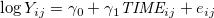
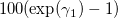
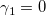
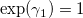

| 縦断データの分析 |
| 縦断データの分析 |
例えば、年齢が不均一なコホートを一定期間追いかける加速コホートデザインによって、より少ない測定時点数でより長い時間間隔を経た変化をモデリングできる。
時間構造化されていないデータを時間構造化されているように扱うことは、分析に誤差を持ち込んでいるようなもの。（測定間隔が違うのに、TIME を測定時期そのものではなく、1回目、2回目などとしてまとめてしまう。）
測定時点の数が異なる非釣り合い型データであっても、マルチレベルモデルは問題なく当てはめられる。
メモ
結果変数が賃金のように正に歪んでいる場合、対数変換したものを予測の対象とすることがある。
 (5.22) このとき、 をパーセント変化率として解釈する。 つまり、TIME が
増加すれば、結果変数には 倍の増加が見込めるということ。
もし  であれば  であるから、TIME が変化しても結果変数は変化しないことになる（パーセント変化率は
）。
メモ
データが過度に非釣り合いであると、分散成分の推定に影響を与える可能性がある。 特に、時点の少ない人が多すぎると、残差のばらつきを正常に評価できない。
 境界制約を超えた推定値、非収束などの問題が生じる。
境界制約を超えた推定値、非収束などの問題が生じる。
一部の残差をゼロに固定するなど、確率的な部分を単純化することで解決を図る。
非釣り合いは計画的に生じたものではないことが多く、なぜ非釣り合いになったのか考えることが求められる。
以下の3つを無視可能な無回答と言い、いずれの条件下でもマルチレベルモデルを当てはめた結果は正しく一般化可能（Laird, 1988）1。
観測される確率が
特定の時期
予測変数の値
結果変数の値
の3つと独立である場合。
観測される確率が
結果変数の値
と独立であるが、
特定の時期
予測変数の値
と関連している。
MCAR と CDD を示すには、「欠測確率は結果変数の同時期の値と関連しない」ことを示さなくてはならない。
MARでは、
欠測がいかなる観測データに依存していても構わない
欠測はいかなる観測されていない値に依存していてはいけない
ことが必要。 実際は、この仮定を満たすことすら難しい（Greenland & Finkle, 1995）。
欠測が上記のいずれでもない場合、
選択モデル（完全データのためのモデルと欠測メカニズムのモデルの2つを立てる）
パターン混合モデル（欠測のパターンごとにマルチレベルモデルを当てはめる）
によって補正を行う必要がある。
時不変な予測変数を加えた場合: レベル2の分散成分は減少しても、レベル1の分散成分はあまり減少しない
時変な予測変数を加えた場合: レベル1も2も分散成分は変化しうる
※ただし、レベル2の分散成分の減少にはあまり意味がないことが多い。
時変の予測変数を追加すると、レベル1のパラメータ  は意味が変わる。
は意味が変わる。
追加前に比べて、レベル2の分散が増加することもある。
時変予測変数間の交互作用を入れれば良い。
![\begin{equation} Y_{ij} = [\gamma _{00} + \gamma _{10} \textit{TIME}_{ij} + \gamma _{20} \textit{UNEMP}_{ij} + \gamma _{30} \underbrace{ \textit{UNEMP}_{ij} \times \textit{TIME}_{ij} }_{\text {interaction}}] + [\zeta _{0i} + \zeta _{1i} \textit{TIME}_{ij} + e_{ij}] \end{equation}](images/img-0046.png) |
(5.7) |
はてな？
UNEMP と TIME の交互作用を考える際に、センタリングしておかなくて良いのだろうか？
はてな？ここまで
中心化は大きな関心を集めているテーマ（Kreft et al., 1995; Hofmann & Gavin, 1998）。
予測変数の全標本平均を引き算すること。
ただし、測定時点と測定回数が人によって異なる場合、この「平均」には意味がないかもしれない。
実質的な意味のある定数で中心化することがよくある。
個人ごとに与えられた定数で中心化すること。
※ 内生性の解釈の問題が生じる。
 と
と  に相関があるとき、どちらが原因で結果か断定できない問題。 縦断データだけで逆方向因果の問題が解決されるわけではない。
に相関があるとき、どちらが原因で結果か断定できない問題。 縦断データだけで逆方向因果の問題が解決されるわけではない。
予測変数の種類によってどれくらい問題が生じるかが異なる。
確定した defined 変数
時変の予測変数の値があらかじめ決定している
ほとんどの場合は時間の関数
逆方向因果は問題にならない
付属する ancillary 変数
時変の予測変数の値が参加者とは無関係な外部の確率的な過程によって（不規則に）決まる
被験者の生きている物理的もしくは社会的な環境の、変化しうる特性2
逆方向因果は問題にならない
文脈的な contextual 変数
確率的に値が決まる時変の予測変数だが、参加者と関係がある3
結果変数の値によって影響されることがあり、逆方向因果が問題になる
内的な internal 変数
個人の時間とともに潜在的に変化しうる時変の予測変数
心理的、身体的、社会的な状態など4
逆方向因果が問題になる
解決の指針として、
理論を指針して、最も厳しい批判を考える
予測変数について、1時点前の値を結果変数に対応させるようにする
など。
時間変数を  と表し、定数
と表し、定数  で中心化することを考える。
で中心化することを考える。
 |
|||
 |
(5.12) | ||
 |
なるモデルを考える。 このとき、 が によって変化するのと合わせて、
が によって変化するのと合わせて、 と
と  の共分散も（結果的に相関も）大きく変化する（Rogosa & Willett, 1985）。
の共分散も（結果的に相関も）大きく変化する（Rogosa & Willett, 1985）。
切片と傾きの相関が強くなりすぎると、安定した推定値を得られにくくなる。
切片パラメータの必要性をなくすような を探すことも有効。
メモ
上記のモデルについて、中心化定数
![\includegraphics[width=12cm]{fig0505.png}](images/img-0055.png) Figure 5.1: 中心化定数とレベル2の残差相関の変化メモここまで
Figure 5.1: 中心化定数とレベル2の残差相関の変化メモここまで
次のようなモデルを考えることで、初期状態と最終状態に対する問いに同時に応えることができる。
 |
|||
|
(5.13) | ||
|
すると、
 : 初期値
: 初期値
 : 最終値
: 最終値
となる。
はてな？
TIME が人によってばらばらである場合、「初期値」とか「最終値」はあくまでサンプル全体での値であるから、「その人の初期値」「その人の最終値」というわけではない。外挿となる可能性が高いのではないか。
はてな？ここまで
このモデルは、上記の  を でセンタリングしたモデルとまったく同じ乖離度を持つ。
を でセンタリングしたモデルとまったく同じ乖離度を持つ。
Footnotes
| 縦断データの分析 |